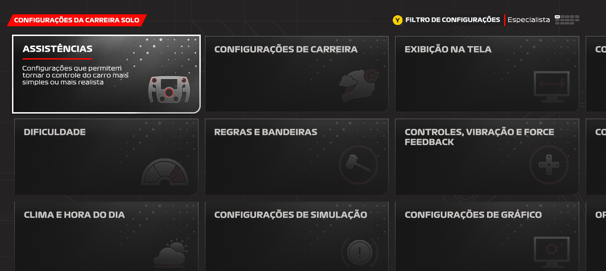

Sobre a Página
Sobre
Essa página foi criada em forma a passar informações atualizadas da temporada de carreira jogada por mim mesmo (Mikael), no jogo da formula 1 24.
Na onde você cria um personagem e simula ser realmente um piloto de formula 1, vivendo e pilotando uma temporada completa de carreira.
Informações no Game
No game, podem ser configuradas a dificuldade, conforme a sua experiência e habilidade no jogo, deixando algumas ajudas para pilotar, como freio abs, mudança da marcha automática, dificuldade da IA, entre várias outras configurações.
A minha configuração e gosto para pilotar, é de mais realista, assim tirando todas as ajudas do game, e deixando a experiência de pilotagem mais realistas. Algumas configurações que deixo habilitada para me auxiliar, é a alinha de traçado (Para quem ja jogou, ou joga games de corrida, pode conhecer), de resto, tudo voltado pra mais realista possível. Piloto também com a câmera do cockpit (Visão do piloto), sem a coluna do halo (Uma proteção que tem no carro de formula 1), por dificultar um pouco a visão, eu prefiro tirar, para evitar colisões por não ter visão da frenagem do carro a frente.